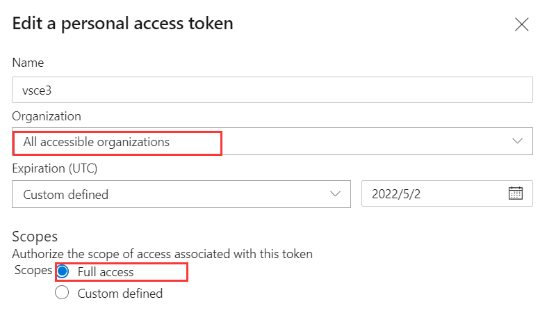

今天打算更新一下我写的 vscode 扩展
code-transform
给他加上了
GoGoCode ast 转换
的功能 ，被微软恶心的发布流程又恶心了一遍
vsce publish 一直报
ERROR Failed request: (401)
vsce login 也是一样的错
最后采取这样的配置解决了问题
Settings · Personal access tokens (2234839456) - Settings (azure.com)

还有扩展发布后是不可以立即更新的，否则会报错
安装扩展 code-transform 失败: 找不到清单文件。
，需要等待微软那边的邮件通知扩展验证通过才行
Aliyun Linux 17.1安装 zerotier 失败
Vue conf 21
从我来迁移文档
你都用 typescript（JavaScript） 来做什么